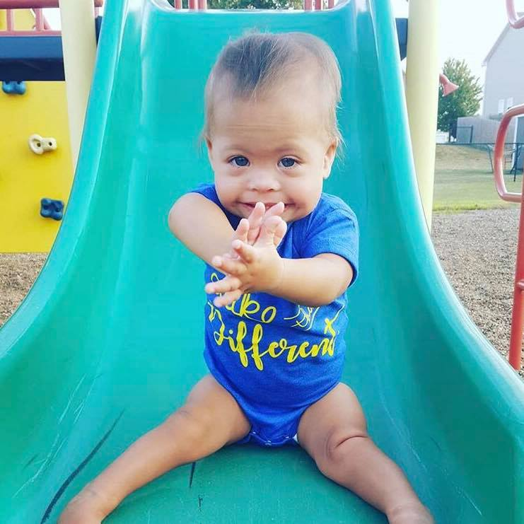

Addi
America Down syndromeAlthough our journey with Down Syndrome has not been long, Addi has taught us so much! Her smiles and laughter will brighten a room, and her blowing raspberries makes everyone gush! She has taught us more about advocating than we ever could have thought.
Addi has taught us patience while we work through therapies, and so much joy and celebration when we hit milestones. She has taught us to look at life with a different lens and I couldn’t imagine our life any different!
I cannot wait to see the amazing things Addi will do and be by her side cheerleading her on all the way!
Get involved Back to all stories